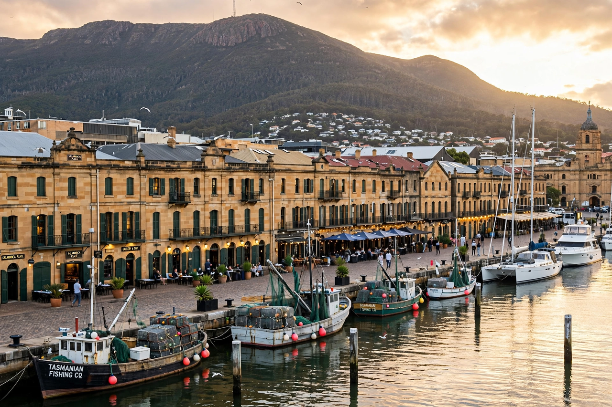

Wikipedia — the free encyclopedia
| Country | Australia |
| State | Tasmania |
| Status | State capital and largest city |
| Founded | 1804 |
| Population | About 250,000 (greater area, estimate) |

Hobart is the capital and most populous city of the Australian island state of Tasmania. It sits on the estuary of the River Derwent, in the shadow of Mount Wellington — kunanyi in palawa kani — whose summit rises about 1,271 metres above the harbour.
Founded in 1804 at Risdon Cove and soon moved to Sullivan's Cove, Hobart is Australia's second-oldest capital city. It began as a penal colony and whaling and shipbuilding port, and its well-preserved Georgian sandstone warehouses around Salamanca Place now house galleries, cafés and the famous Saturday Salamanca Market.
Hobart has reinvented itself as a cultural destination, anchored by the Museum of Old and New Art (MONA), opened in 2011 on the Derwent north of the centre, and the mid-winter Dark Mofo festival. It is also the finishing line of the Sydney to Hobart Yacht Race, held each year from Boxing Day, and a gateway port for Antarctic research and tourism.